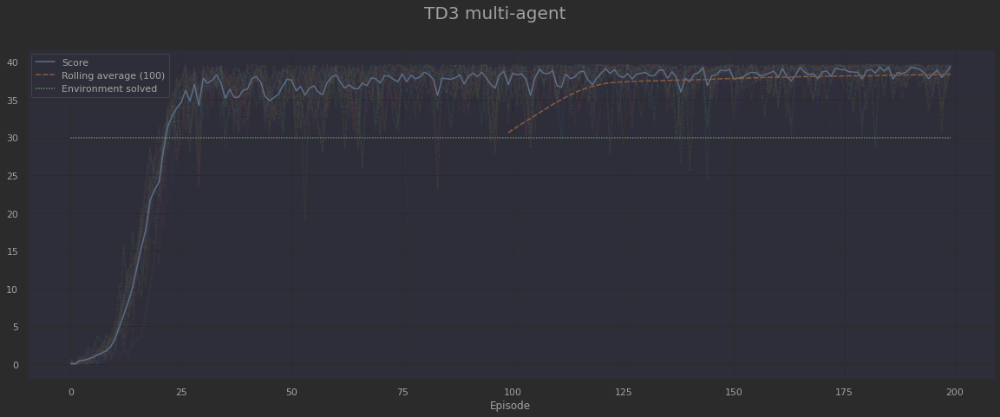

Deep Reinforcement Learning Nanodegree
This repository contains my Deep Reinforcement Learning solution to one of the stated problems within the scope of the following Nanodegree:
Deep Reinforcement Learning Nanodegree Program - Become a Deep Reinforcement Learning ExpertDeep Reinforcement Learning is a thriving field in AI with lots of practical applications. It consists of the use of Deep Learning techniques to be able to solve a given task by taking actions in an environment, in order to achieve a certain goal. This is not only useful to train an AI agent so as to play videogames, but also to set up and solve any environment related to any domain. In particular, as a Civil Engineer, my main area of interest is the AEC field (Architecture, Engineering & Construction).
Continuous Control Project
This project consists of a Continuous Control problem, which is contained within the Policy Based Methods chapter and is solved by means of Deep Deterministic Policy Gradient algorithms (DDPG and TD3).
Environment description
The environment used for this project is based on the Unity ML-Agents Reacher environment from 2018. Nonetheless, the updated corresponding equivalent in 2022 would be the Worm Environment.
It consists of a playground with a certain number of double-jointed arms in it (one for the single-agent version or 20 for the multi-agent version). In addition, there are some sphere-shaped volumes, which move over time, designing the goal location for the arms' hand. The goal is then for the arms to maintain its position at the target location for as many time steps as possible.

Its characteristics are as follows:
- The state space has 33 variables corresponding to position, rotation, velocity, and angular velocities of the arm.
- The action space consists of 4 continuous actions with component values between -1 and +1. They correspond to the amount of torque applicable to both joints.
- A reward of +0.1 is provided for each step that the agent's hand is in the goal location.
- The environment is considered solved when the average score over 100 episodes is at least 30. When multi-agent, the score for all the agents is also averaged.
Solution
The solutions to the Reacher environment provided within this repository are described as follows.Algorithms overview
As introduced above, the environment is solved by means of Deep Deterministic Policy Gradient algorithms. Namely, vanilla DDPG, as well as its cutting edge brother TD3.
Deep Deterministic Policy Gradient (DDPG)
This is the vanilla DDPG algorithm, as firstly introduced by the DeepMind team in 2015, which accomplished to transfer the ideas underlying the success of Deep Q-Learning to the continuous action domain.
Some minor tweaks from the paper taken here into account have been the consideration of a typical gaussian noise for action selection, instead of the originally proposed Ornstein–Uhlenbeck process, as well as a traditional Kaiming He initialization for the middle layer weights of the neural networks.
Twin Delayed Deep Deterministic Policy Gradient (TD3)
This algorithm, better known as TD3 and introduced by Fujimoto et al. in 2018, is a variation of DDPG which better handles overestimated value estimates, typical in value-based RL methods. It achieves so by i) emulating Double Q Learning in the consideration of the minimum value between a pair of critics, ii) delaying policy updates and iii) adding also some noise to the target actions.
Repository description
The code is structured with the PyTorch Deep Neural Networks on model.py, the agent logics on agent.py and the environment setup on environment.py. All of it is structured pythonically, in an OOP fashion, and is often self-explanatory. Lastly, the Jupyter Notebook Continuous_Control.ipynb builds up an interface to train agents according to variations of the Deep Deterministic Policy Gradient algorithm, as well as to visualize the corresponding results with pandas DataFrames and Seaborn plots.
A first attempt is tried on the Single Agent environment. Nonetheless, as it will be seen, the necessary conditions to successfully solve the environment within the set of hyperparameters and number of episodes chosen have only been met on the Multi Agent environment.
It should be noted that in the Multi Agent case, in order to take full advantage of the agents running in parallel and improve performance, one single Memory Replay Buffer, as well as one single Critic constructor have been shared among all agents.
Single-Agent Environment
DDPG
Below, it is shown the training evolution for 500 episodes:
As it can be seen, the learning of the agent is very slow, reaching barely 16 points at the end of the 500 episodes. Experimentation with the learning rate has shown that for higher values, the learning becomes unstable. Even in this case, a tipping point occurs at 330 episodes, which prevents the agent from continuing to learn.
In consequence, the DDPG single-agent case has not been able to solve the environment within 500 episodes, and presents high levels of noise, as well as signs of instability.
TD3
Below, it is shown the training evolution for 500 episodes:
This learning curve is rather similar to the previous DDPG single-agent case. However, there are some clear differences. Firstly, the learning starts much slower, but then grows steadily under control, until 20.7 points are reached at the end of the 500 episodes. Still, not enough to beat the environment, but it is clear that even this single-agent setup could achieve it, had it a couple hundred more episodes to train.
Multi-Agent Environment
DDPG
Below, it is shown the training evolution for 200 episodes:
This case is clearly different. Now, the environment is solved, and surprisingly quickly. In roughly 25 episodes, the agents are already averaging 30 points. Undoubtedly, the fact of being 20 agents helping to enhance the Critic at the same time, while sharing a global Memory Replay Buffer, boosts performance to another level.
TD3
Below, it is shown the training evolution for 200 episodes:
Finally, the TD3 multi-agent case excels at solving a continuous control environment such as the Reacher. Overall, it is similar to the vanilla DDPG multi-agent case, but converges faster, and due to a reduced amount of lower scores among all the agents, achieves a level close to maximum score. It is an extremely reliable algorithm for a case like this one.
Comparison of both algorithms
Needless to say, this is not a thorough comparison, since only one run is included for each combination of algorithm / multi-agent condition, and with a given set of hyperparameters. Even so, this has been a fascinating exercise which has let me further understand the dynamics of deterministic policy gradient algorithms.
The following chart shows the number of episodes which was needed to solve the environment in the multi-agent case, for each of the implemented algorithms:

Both algorithms perform very well. Indeed, since the score must be averaged across a hundred episodes, the end of episode nº 100 is the first opportunity to get a valid score. Already at that time, TD3 beats the environment with more than 30 points, whereas DDPG just needs eight more episodes. Bearing in mind the fact that this average necessarily includes the very first episodes, when the agents are still beginning its learning, this milestone is revealed as an extraordinary indicator.
As it has been stated before, TD3 reaches a higher average score than DDPG (38 Vs 34 points). Furthermore, DDPG shows some degree of inconsistency / higher noise, whereas TD3 barely deviates from the maximum score once the learning is accomplished.
Ideas for a next step
In order to improve future performance, the following elements could be explored:
- Hyperparameter tweaking (learning rates, batch size, amount of noise, delays, etc.)
- Experiment with more complex architectures for the neural networks, as well as with regularization techniques.
- Perform a training run with Prioritized Experience Replay. Although it is naïvely implemented in the code, I have not tried a long run due to performance. A faster implementation would allow to prove how much of a gain it would be.